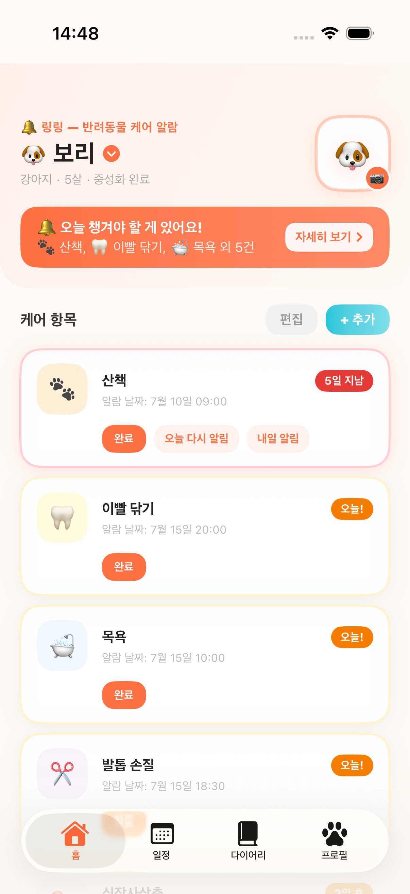
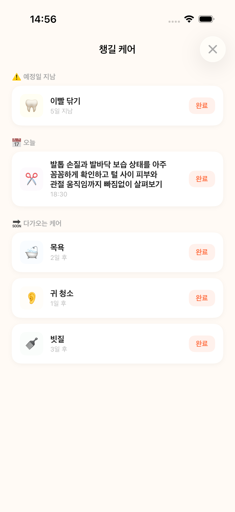
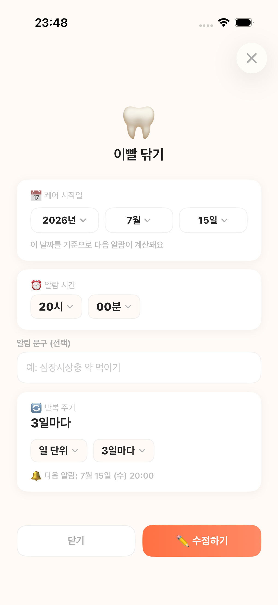
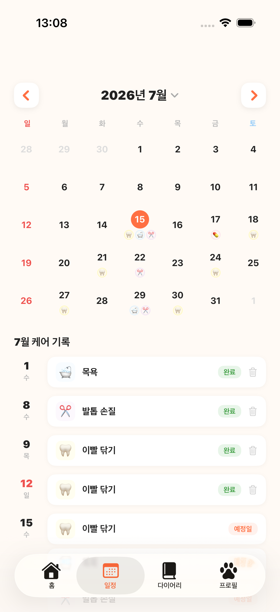
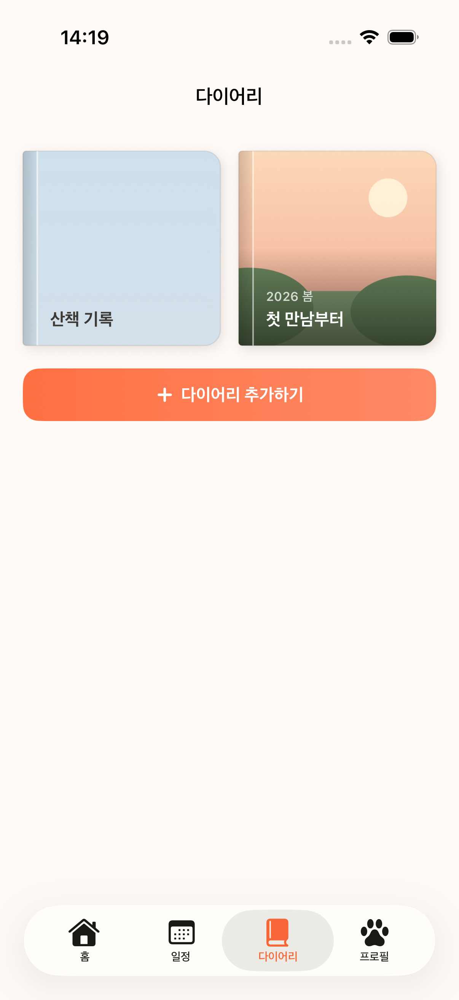
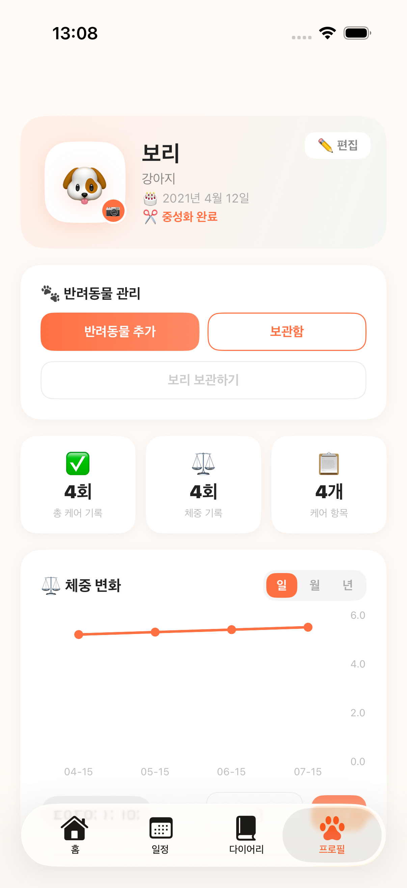

🔔
내 일정에 맞춘 알림
시작일·시간·알림 문구를 정하고, 일·주·월·년·특정 요일·월말 반복까지 세밀하게 설정해요. 놓친 케어는 오늘이나 내일 다시 알려드릴 수 있어요.
목욕·약·병원까지. 반려동물 케어 루틴을 대신 기억하고
제때 알려주는 따뜻한 알림 앱, 링링.
계정 없이 시작 · 핵심 케어 데이터는 기기에 저장

복잡한 설정 없이 바로 쓸 수 있어요.
시작일·시간·알림 문구를 정하고, 일·주·월·년·특정 요일·월말 반복까지 세밀하게 설정해요. 놓친 케어는 오늘이나 내일 다시 알려드릴 수 있어요.
기한이 지났거나 오늘·곧 예정된 케어를 모아 보고 그 자리에서 바로 완료해요.
완료 기록과 예정 케어를 한 달 달력에서 함께 보고 날짜별 상세를 열어요.
아이마다 프로필을 만들고 한 번에 전환해요. 케어 설정 복사와 반려동물 보관·복원도 지원해요.
아이별로 다이어리 책을 만들고 표지와 날짜·글·사진 최대 10장을 담은 속지를 쌓아요.
프로필·케어 통계와 일·월·년 단위 체중 변화를 한곳에서 확인해요.
케어 카드를 원하는 순서로 옮기고, 루틴을 복사하거나 기록을 유지한 채 보관해요.
iOS와 Android에서 라이트·다크 테마를 직접 고르고 한국어·영어로 사용해요.
회원가입 없이 시작해요. 핵심 케어 데이터는 기기에 저장되고 익명 분석은 동의 전까지 꺼져 있어요.
홈·일정·다이어리·프로필 네 탭과 최신 케어 흐름을 실제 화면으로 확인해 보세요.





첫 반려동물을 등록하면 바로 쓸 수 있게 준비돼 있어요. 직접 추가하거나 보관함으로 정리할 수도 있어요.